작은 팀이 iOS·Android·웹을 동시에 운영해야 했고, 스토어 심사를 거치면 작은 수정도 바로 내보낼 수 없었습니다.
판단
Expo 한 코드베이스로 세 플랫폼을 만들고, 화면·로직 수정은 EAS Update(OTA)로 바로 내보내기로 했습니다.
구현
새 업데이트는 백그라운드에서 미리 받아 두고 앱에 돌아올 때만 적용해 화면 깜빡임을 없앴고, 복귀 시 확인은 15분 쿨다운으로 요청이 몰리지 않게 했습니다. 네이티브 버전이 다르면 자동 업데이트를 막아, 새 네이티브 코드가 필요한 업데이트가 옛 앱에 내려가 죽는 일을 막았습니다. 웹은 GitHub Actions로 S3+CloudFront 배포와 OTA 게시까지 자동화하고, 해시가 붙은 파일은 오래 캐시하되 HTML·서비스 워커는 매번 확인하게 나눠 배포 후 옛 화면이 남던 문제를 해결했습니다.
결과
v1.1 → v1.5까지 4개월간 정식 릴리스 5회, 그 사이 수정은 심사 없이 OTA로 반영
소셜 로그인과 "연결까지 끊는" 탈퇴
상황
Kakao·Google·Apple 로그인을 지원해야 했고, App Store는 탈퇴할 때 Apple 계정 연결까지 해제하도록 요구합니다. 그런데 Android에는 Apple 로그인 SDK가 없습니다.
구현
Kakao SDK와 Firebase Auth(Google·Apple)로 로그인을 구성하고, 탈퇴 시 각 IdP의 토큰·코드를 서버에 함께 넘겨 연결을 해제했습니다. Android에서 Apple 인증 창을 띄우면 App Links 없이는 리다이렉트를 기다리다 창이 닫혔고, 쿼리로는 id_token을 받을 수 없었습니다. 그래서 웹 페이지에서 Apple JS로 code와 id_token을 한 번에 받아 glab:// 딥링크로 앱에 넘기는 브릿지를 만들었습니다.
결과
세 플랫폼 모두 같은 로그인·탈퇴 흐름으로 스토어 심사 기준 충족
AI 채팅 스트리밍 중 불필요한 렌더링 줄이기
문제
답변이 스트리밍되는 동안 토큰이 올 때마다 store와 채팅 화면 전체가 다시 그려졌고, 다른 대화가 스트리밍 중일 때도 보고 있는 화면이 다시 그려졌습니다.
원인
이미 있던 throttle은 대기 값이 할당되지 않아 실제로는 동작하지 않았고, 대화 목록 구독이 채팅 화면 전체에 걸려 있었습니다.
해결
스트리밍 중에는 store 동기화를 건너뛰고, 메시지 컴포넌트 비교 함수로 마지막 메시지만 다시 그리게 했습니다. 대화 목록 구독은 사이드바로 옮기고, 채팅을 탭 밖 별도 스택으로 올려 freezeOnBlur로 안 보일 때는 렌더링을 멈추되 상태는 유지했습니다.
그 외 맡은 일
파트장: 프론트 기획과 디자인 검토, 출시 전 버튼 위치·화면 흐름 점검, 전체 커밋 검토와 코드리뷰(동료 PR 264건 중 149건 머지), PR 템플릿 도입, 스토어 출시·OTA 업데이트 관리
실시간 랭킹: 연결 전에 보낸 구독 해지가 늦게 도착해 스켈레톤에 멈추던 경쟁 조건을 고치고, 1초 안에 데이터가 없으면 다시 구독
홈 개편(관심 종목 접기, 뉴스 필터, 탭 다시 누르면 맨 위로), 관심 등록 캐시 정합성
포트폴리오 매수·매도·편집·복사와 도넛·샤프 차트
테마 공통화, PostHog 분석, PWA, 모바일 웹에서 스토어 설치 유도
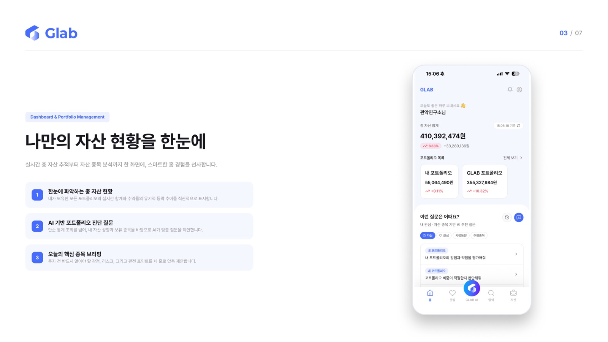
홈 · 자산 현황
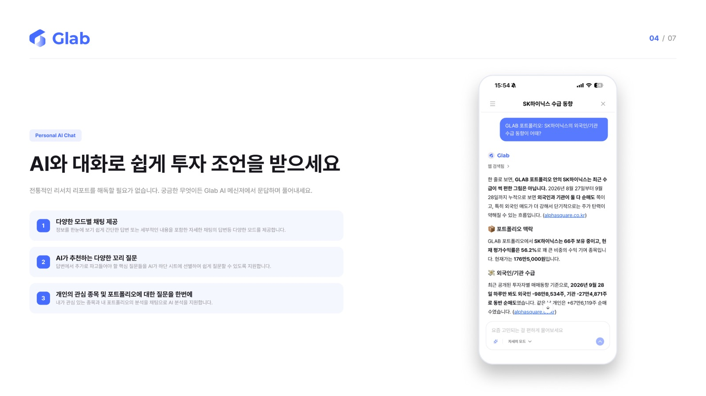
AI 채팅
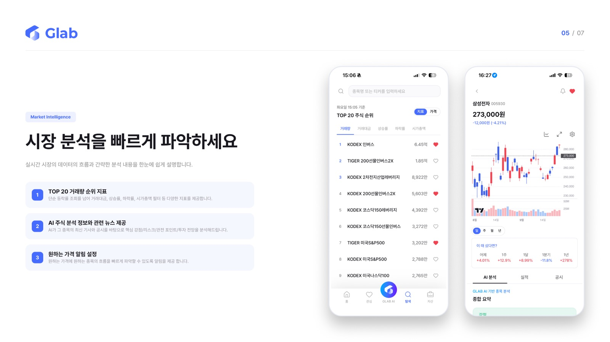
탐색 · 실시간 랭킹
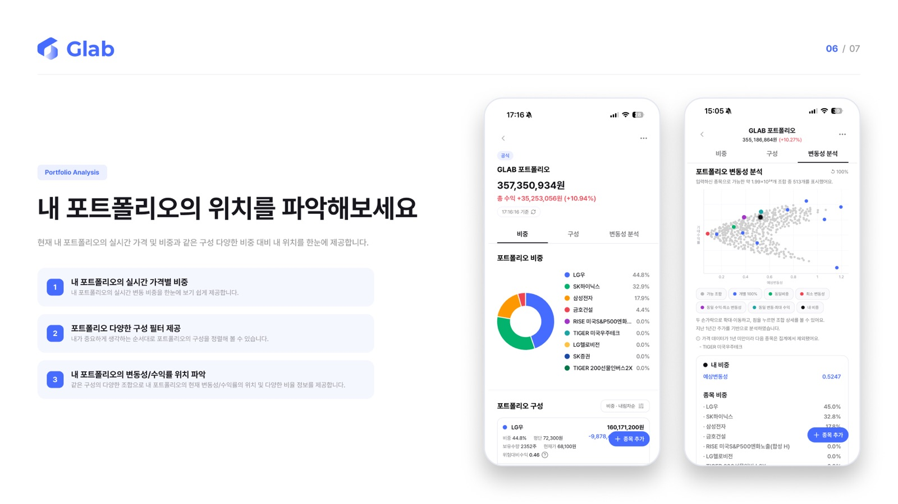
포트폴리오 분석
관악연구소 · 2026.08 – 2026.09
GLAB 관리자 웹
GLAB 운영을 위한 관리자 웹입니다. 사용자, 공지, 약관, 앱 버전, 추천 질문, 고객지원까지 21개 화면을 설계·구현했습니다. 관리자 API가 나오기 전에 운영 규칙을 먼저 정의하는 단계로, 현재는 목 데이터로 동작합니다.
API를 기다리기보다 "운영자가 실수하면 안 되는 것"을 먼저 정해 화면에 넣고, 목 데이터로 흐름을 검증했습니다.
구현
공지 예약 게시(지난 시각 선택 불가)와 지난 공지의 게시일·푸시 잠금, 사용 중인 약관 유형 삭제 제한, iOS·Android·웹 클라이언트별 버전 등록. 앱 버전은 최신/이전 테이블을 나눠 지금 배포 중인 버전이 묻히지 않게 했습니다. 규칙은 Zod 스키마로 옮겨, 작성과 수정에 다른 규칙을 적용하고 약관 본문은 HTML 안에 실제 글자가 있는지까지 검사했습니다.
앱이 깨지지 않고, 개인정보가 새지 않게
문제
관리자 웹에서 쓴 글이 앱에서 그대로 보여야 하고, 운영자 화면에 사용자 정보가 그대로 노출되면 안 됩니다.
구현
TipTap 에디터 하나를 출력 형식만 바꿔 재사용해, 공지는 Markdown, 약관은 앱의 HTML 렌더러에 맞춘 HTML로 저장하게 했습니다. 사용자 목록과 고객지원 화면에서는 이메일·닉네임을 기본으로 가리고, 필요한 행 하나만 열어 볼 수 있게 했습니다.
관악연구소 · LG CNS 고객사 프로젝트 · 2025.01 – 2025.11
LG CNS COP · 생성형 AI 이미지 편집 플랫폼
텍스트로 이미지를 만들고 배경 확장·제거, 부분 편집, 업스케일링, 이미지 속 텍스트 편집까지 하는 웹 서비스입니다. AI 페스타에서 공개돼 언론에 보도됐고, 산돌구름 AI Studio 베타로 오픈했습니다. ADMIN 프론트엔드 전체를 설계·구현했고, 서비스 프론트엔드에서는 공통 컴포넌트·인증 구조와 개발·배포 자동화를 구축했습니다.
운영자가 사용자에게 크레딧을 수동으로 발급하고 계정·그룹·공지·정책을 관리해야 했고, 역할마다 볼 수 있는 기능이 달라야 했습니다.
구현
역할 4종에 따라 메뉴·탭·접근 경로를 나누고, 크레딧 발급은 마스터에게만 보이게 했습니다. 발급량은 숫자만 받아 10~9,999 범위를 벗어나면 버튼을 막고, 발급 전에 내용을 확인 모달로 한 번 더 보여 줍니다. 사용 현황 필터는 URL에 담아 새로고침·뒤로 가기에도 유지되게 하고, 그룹→사용자 드릴다운과 엑셀 내보내기를 넣었습니다.
결과
ADMIN 전체(사용 현황, 크레딧 발급, 계정·그룹, 공지, 정책)를 테스트 일정 안에 완료
팀이 같이 쓰는 기반 만들기
상황
여러 명이 서비스 화면과 ADMIN을 동시에 만들어야 해서, 로그인·인증·오류 처리가 화면마다 달라질 위험이 있었습니다.
구현
로그인과 공통 UI 구조를 설계하고 팀 공통 컴포넌트를 정리했습니다. 토큰이 만료돼 여러 요청이 동시에 401을 받아도 갱신은 한 번만 하고, 기다리던 요청은 새 토큰으로 다시 보냅니다. 서버 오류는 쿼리 캐시에서 한곳으로 모아 상태·서비스 코드별로 토스트를 띄우고, 응답은 Zod로 검증해 화면마다 따로 처리하지 않게 했습니다. 같은 구조를 서비스와 ADMIN에 똑같이 적용했습니다.
자동화
husky와 lint-staged로 커밋 전에는 lint, push 전에는 lint와 타입 검사를 돌려 깨진 코드가 올라가지 않게 했고, GitHub Actions로 main에 push하면 빌드 → S3 배포 → CloudFront 캐시 무효화까지 자동으로 되게 했습니다.
그 외 맡은 일
마이페이지·텍스트 편집 기능 구현과 세부 기획 참여, 테이블 편의 기능 제안
DTO·서비스 문서를 작성해 백엔드와 API 형식 합의
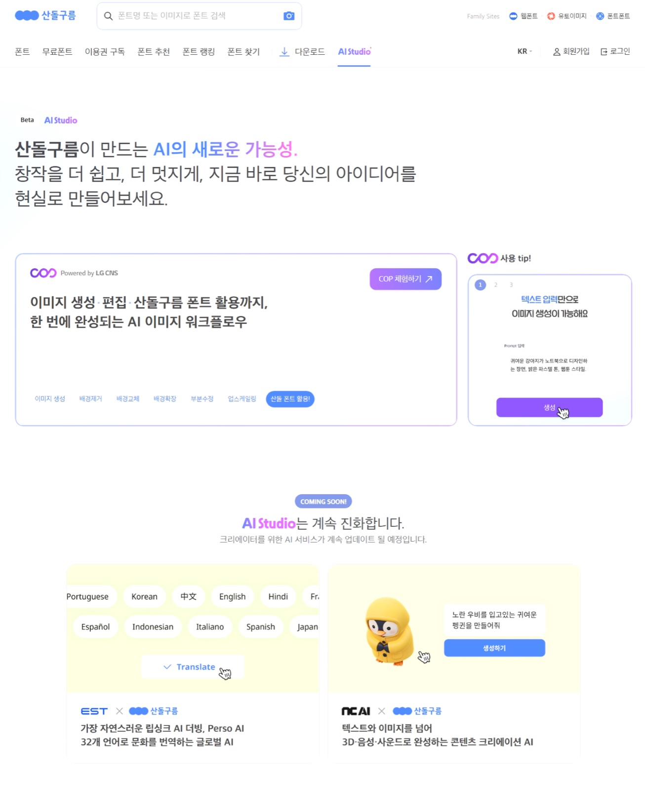
산돌구름 AI Studio 베타
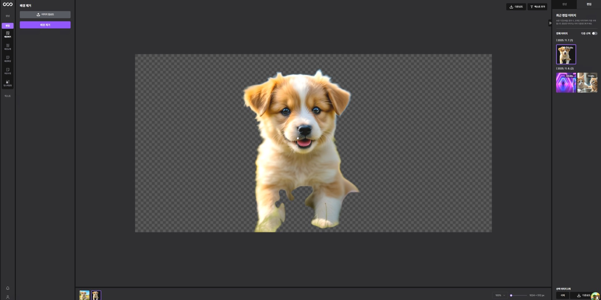
배경 제거
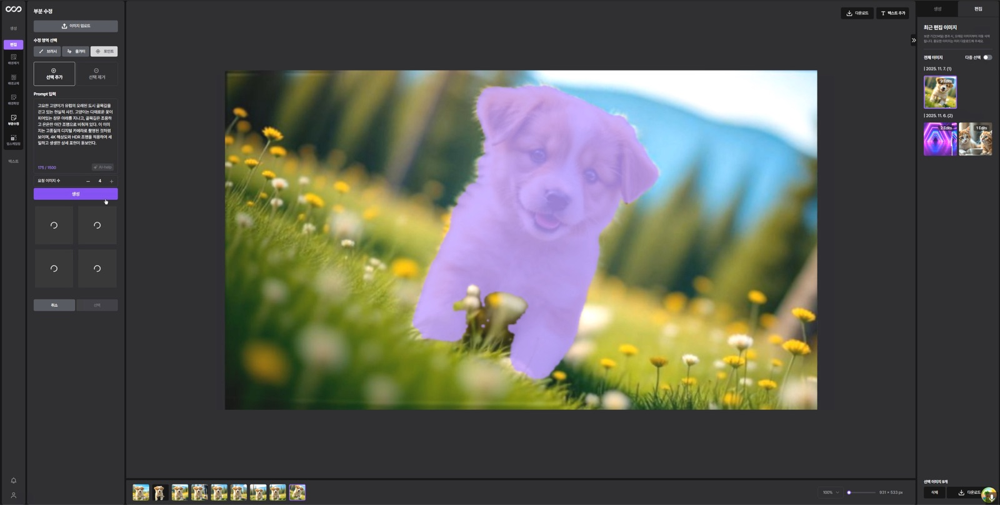
부분 편집 · 영역 선택
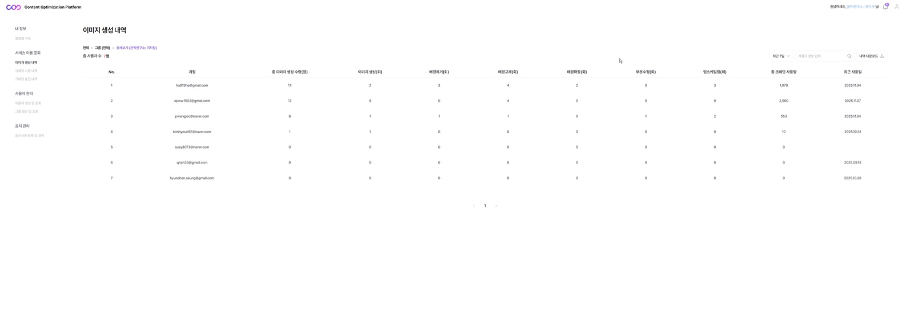
ADMIN · 사용 현황
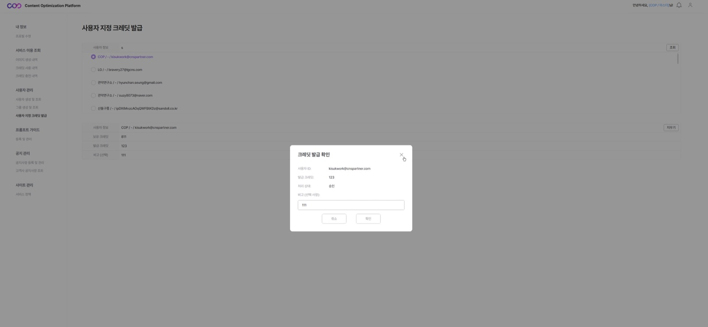
ADMIN · 크레딧 발급
티맥스가이아 · 2022.01 – 2025.01
GAIA OFFICE Chart
웹오피스의 차트를 Victory 라이브러리 위에 만들었습니다. 2022년 9월 팀 개편 이후에는 차트 기능 전체의 개발과 유지보수를 책임졌고, 신규 입사자 멘토링도 맡았습니다.
역할차트 모델·컴포넌트 설계, 기능 전체 개발·유지보수
스택React, TypeScript, MobX, Victory
성과대용량 렌더링 10,000ms → 100ms
데이터 포인트 단위에서 계열 단위로 (2023.01 – 03)
문제
데이터가 많은 차트일수록 급격히 느려져, 100×100 차트 하나를 그리는 데 약 10초가 걸렸습니다.
원인
가장 작은 단위인 데이터 포인트마다 컴포넌트를 만들고 있어서, 100×100 차트면 컴포넌트가 10,000개 생겼습니다.
해결
계열(series) 하나를 path 하나로 그리도록 바꿔 컴포넌트를 100개로 줄였습니다. 오차 막대, 데이터 레이블, 선택, 행/열 전환, 타입 변경까지 모두 새 구조에 맞췄습니다.
결과
렌더링 10,000ms → 100ms
라이브러리가 지원하지 않는 Excel 호환 오차 막대
문제
Excel과 같은 오차 막대가 필요했지만, Victory는 cap 없는 형태나 한 축만 보이는 형태를 지원하지 않았습니다.
해결
Error Bar가 만드는 path 값을 받아 수정해 그렸고, 오차량 계산식도 구현해 MS Excel 2021과 같은 값이 나오게 했습니다.
그 외 맡은 일
Chart 모델·컴포넌트 트리·데이터 관리 구조 설계, OOXML 기준 Import/Export
차트 삽입·종류 변경·데이터 선택 다이얼로그, 요소 추가 메뉴, 행/열 전환, Multi-Range·Multi-Category 데이터
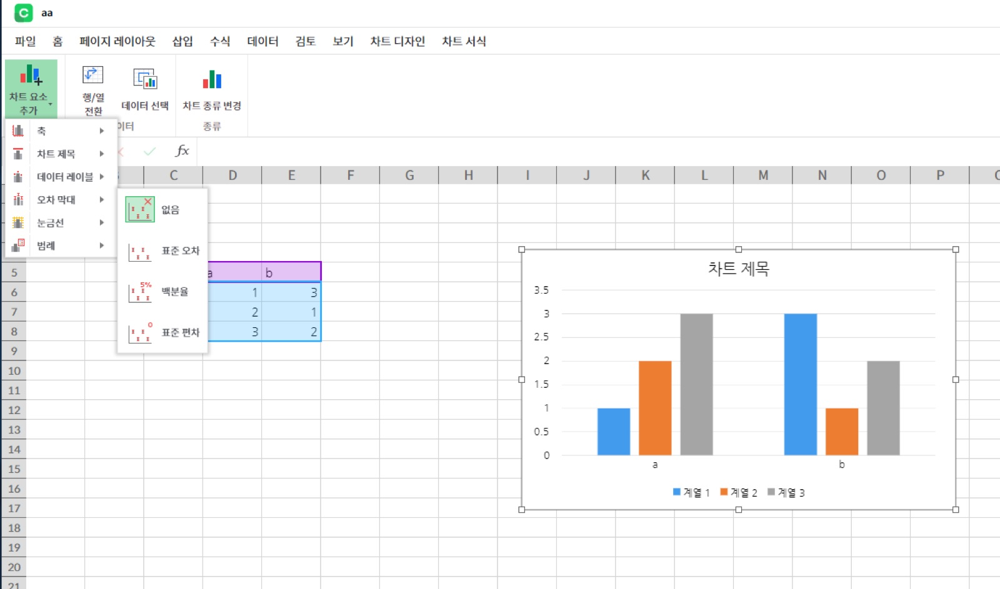
차트 요소 추가 메뉴
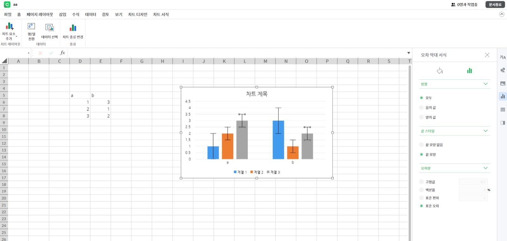
오차 막대 서식
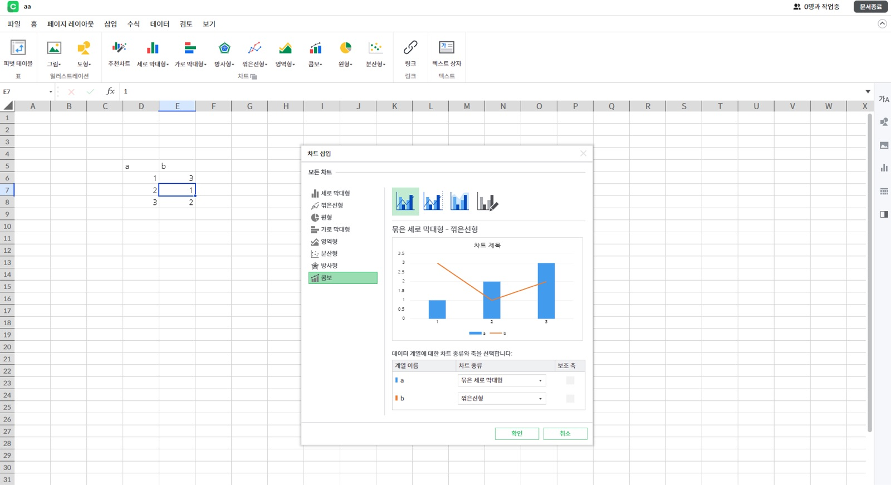
차트 종류 변경 · 콤보 차트
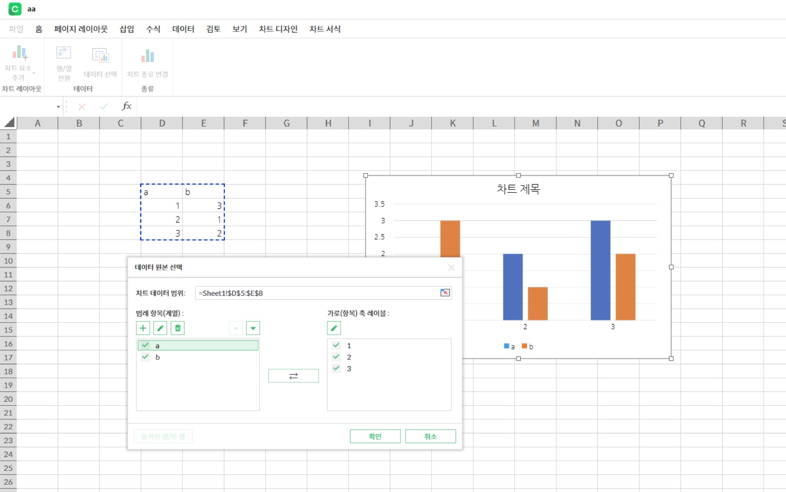
데이터 선택 다이얼로그
티맥스가이아 · 2022.06 – 2025.01
GAIA OFFICE Cell · 웹 스프레드시트
웹오피스의 스프레드시트입니다. 표시 형식, 피벗 테이블, 병합, 그래픽 요소를 개발했고, 2년 동안 이슈 약 555건을 처리했습니다(약 35%는 담당 기능 밖). NTIS 국가 R&D 과제(12859502)에 참여했습니다.
역할Cell 기능 개발·유지보수
스택React, TypeScript, Canvas, Java
이슈 처리약 555건
시트 전체를 병합하면 멈추는 문제 (2024.03 – 05)
문제
시트 전체(약 170억 셀)나 행·열 전체를 병합하면 오피스가 멈췄습니다.
원인
병합 전 값을 백업할 때 범위 안의 데이터 벡터를 빈 칸까지 전부 복사하고 있었습니다.
해결
빈 데이터는 건너뛰고, Dimension Reference로 실제 데이터가 있는 최소 범위만 복사하도록 바꿨습니다. 셀·행/열·전체 선택에 따라 스타일 적용 범위도 다시 계산하고, Excel 2021의 병합 스타일 규칙을 분석해 맞췄습니다.
결과
전체 병합 시 멈춤 해결, 선택 범위와 실제 병합 범위가 어긋나던 오류도 함께 정리
한국 서식을 지원하는 표시 형식(Number Format) (2023.02 – 05)
문제
numfmt 라이브러리를 썼지만 한국 날짜, 경과 시간([h]:mm:ss), 원화 기호, 소수점 증감은 제대로 처리하지 못했습니다.
해결
입력값을 라이브러리가 이해하는 형식으로 바꾸는 변환 로직을 규칙마다 구현했습니다. 회계 서식은 Canvas measureText로 글자 폭을 재서 통화 기호와 숫자 사이를 셀 너비에 맞게 띄웠습니다.
문서 자동 완성 TFT (2023.06 – 08)
외부 앱 데이터(사고 접수 등)를 Cell 문서의 지정 구역에 자동으로 채워 문서를 만드는 기능. TFT에서 가장 낮은 연차로 대표 기능을 담당
Word·Point·Cell 공통 구역 관리 구조와 DB 테이블 설계, MERGE INTO로 중복 태그 Insert/Update를 한 번에 처리
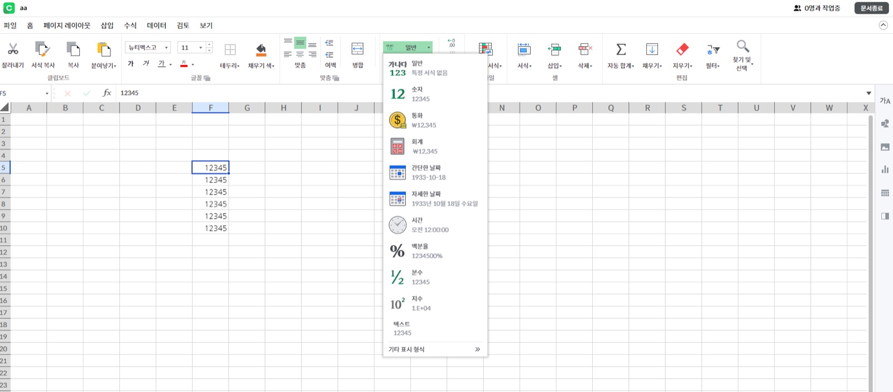
홈 탭 · 표시 형식
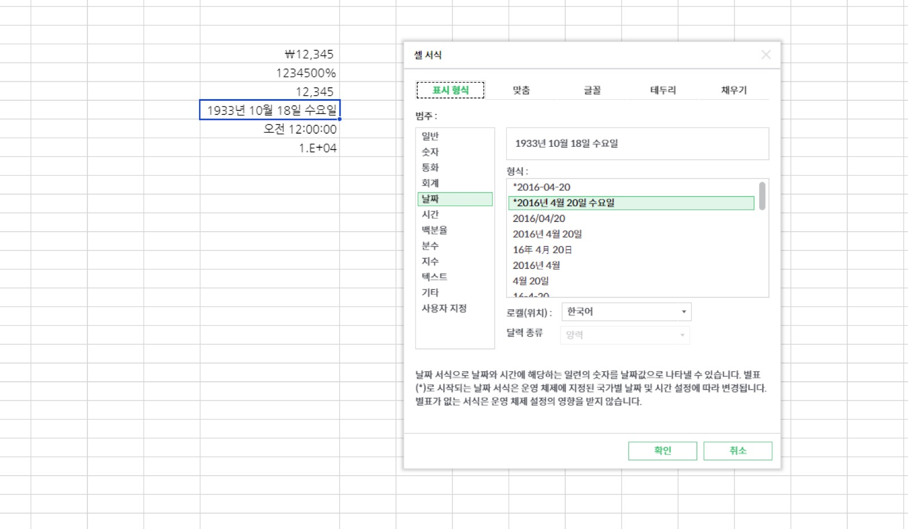
셀 서식 · 표시 형식
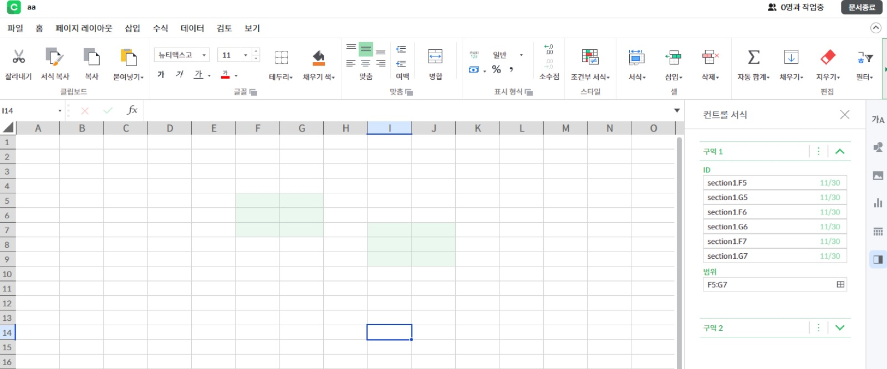
문서 자동 완성 · 구역 설정
개인 프로젝트 · 2026.10 – 현재
DoIt2 · 함께 쓰는 버킷리스트 앱
연인·친구·가족이 공간을 만들어 가고 싶은 곳과 해보고 싶은 것을 함께 모으고, 다녀온 뒤 사진과 후기를 남기는 앱입니다. 기획부터 앱, Supabase 백엔드 설계, App Store 심사 대응까지 진행했습니다.
스택Expo SDK 58, Expo Router, NativeWind, Zustand, Supabase, Jest
여러 명이 동시에 고쳐도 사라지지 않게
문제
한 공간을 여러 명이 같이 쓰기 때문에, 두 사람이 동시에 체크리스트를 고치면 한쪽 변경이 덮어써질 수 있었습니다.
해결
목록 전체를 저장하지 않고 "a를 체크함", "c를 추가함" 같은 변경 단위로 기록해 서버 상태 위에 다시 적용했습니다. 같은 변경이 두 번 전송돼도 결과가 같게 만들고, 오프라인일 때는 보낼 변경을 쌓아 두었다가 보냅니다.
검증
"두 사람이 다른 항목을 체크해도 둘 다 남는다" 같은 시나리오를 Jest 테스트로 고정했습니다.
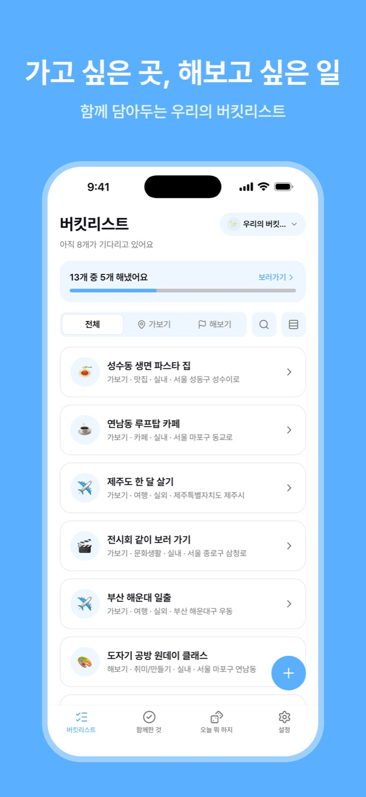
버킷리스트
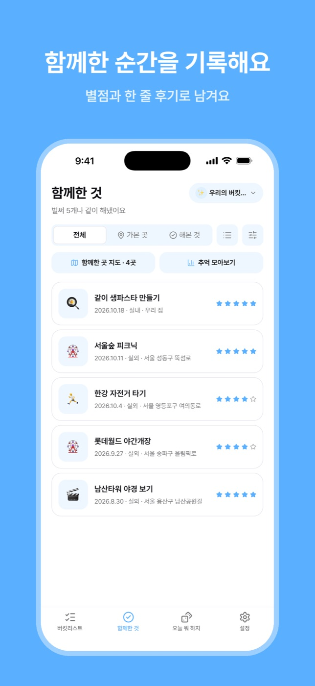
함께한 기록
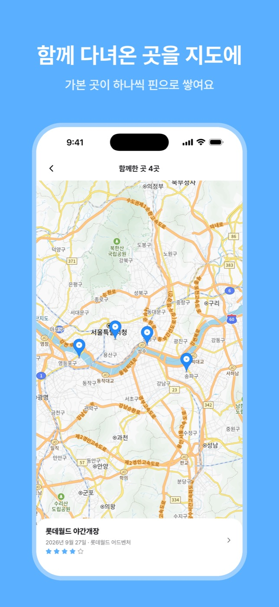
다녀온 곳 지도
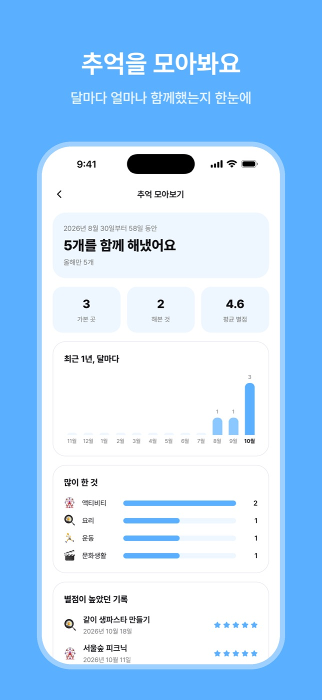
추억 돌아보기
개인 프로젝트 · 2026.10 – 현재
Month · 복약 알림 앱
먹을 약과 시간을 등록하면 하루 복용 일정을 보여 주고, 알림과 홈 화면 위젯에서 바로 복용 여부를 체크하는 iOS·Android 앱입니다. 서버 없이 기기에만 저장합니다. Figma 스토리보드를 바탕으로 설계·개발했습니다.
역할설계·개발
플랫폼iOS · Android
스택Expo SDK 58, Expo Router, expo-widgets, Kotlin, expo-sqlite, Zustand, Jest
앱을 열지 않아도 맞는 위젯
상황
위젯은 앱이 넘겨 준 값만 그립니다. 그래서 앱을 열지 않으면 자정이 지나도 어제 일정이 그대로 남았고, 위젯에서 누른 "복용완료!"도 앱에 반영되지 않았습니다. Android용 expo-widgets에는 위젯이 저장한 값을 JS에서 읽는 API가 없었습니다.
판단
하루치가 아닌 7일치 일정을 위젯에 넘기고, 오늘 보여 줄 화면은 위젯이 그려질 때 현재 날짜로 스스로 계산하게 했습니다.
구현
Android는 Kotlin 네이티브 모듈 widget-bridge를 만들어 위젯 저장값을 읽고, 자정 알람으로 위젯을 다시 그리게 했습니다. 재부팅하거나 시간·시간대가 바뀌면 알람을 다시 겁니다. iOS는 매일 0시 타임라인 항목으로 처리했습니다. 위젯 버튼 기록은 위젯 쪽에 쌓아 두었다가 앱이 열릴 때 반영하고, 라이브러리 수정은 patch-package 패치로 관리합니다.
검증
iOS·Android 위젯 코드를 실제로 변환해 실행하는 테스트를 만들어, 두 파일의 화면 계산이 어긋나지 않게 고정했습니다.
알림이 정시에, 빠짐없이 오게
상황
iOS는 예약 알림이 64개로 제한되고, Android 14부터는 새로 설치하면 정확한 알람 권한이 꺼져 있어 알림이 몇 분씩 늦을 수 있습니다.
구현
반복 알림 대신 앞으로 7일치를 날짜별로 예약하고, 앱을 열 때와 기록이 바뀔 때마다 다시 채웁니다. 같은 시간의 약은 알림 하나로 묶었습니다. Android는 알림을 켤 때 권한을 안내한 뒤 시스템 설정으로 보내고, 거부해도 알림은 켠 채 저장합니다.
그 외 작업
Jest 단위 테스트 66개(일정 계산·완료율·알림 예약·위젯), 커밋·push 때 husky 검사, PR마다 GitHub Actions CI